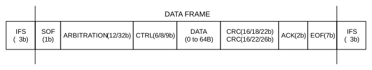
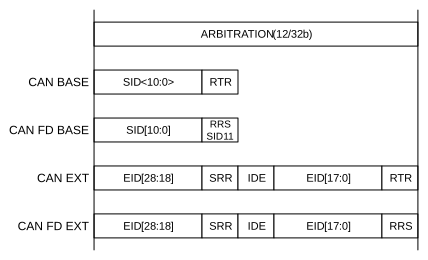
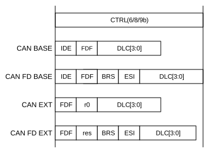
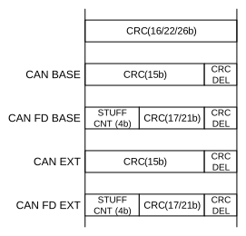
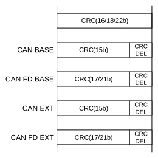
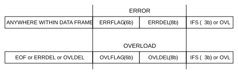

To support the system validation of non-ISO CRC ECUs, the CAN FD Controller module supports both ISO CRC (according to ISO11898-1:2015) and non-ISO CRC (see Figure 38-10 and Figure 38-11). The CRC field is selectable using the ISOCRCEN bit (C1CON[5]). The ISO CRC field contains the stuff count. This count was not included in the original CAN FD specification; it was added to fix a minor issue in the error detection of the original specification.
CAN FD frames use two different lengths of CRC: 17-bit for up to 16 data bytes and 21-bit for 20 or more data bytes. Technically, there are a total of six different CAN data/remote frames in the CAN FD.





